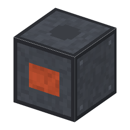

説明
①子ども 空気の窒素と水素から、肥料のもとのアンモニアを作る、高い圧力の塔。
②学生 鋼6＋圧縮機＋銅ケーブルで作る。20kW（圧縮の電力）。窒素の袋1＋水素の袋3＋鉄の触媒（減らない）→ アンモニアの袋2（10秒）。触媒がないと動かない。
③大人 約200気圧・約450℃で、鉄の触媒の上に窒素と水素を通す。1回で反応するのは15%ほどなので、できたアンモニアを冷やして液にして取り、残りのガスをまた回す。
④ガチ 1909年ハーバーが実験室で成功し、1913年 BASF のボッシュが工場にした（高圧の水素が鋼をもろくするので、二重の壁の塔を考えた）。教訓：ハーバーは第一次世界大戦で塩素ガスの攻撃（1915 イーペル）を指導し、多くの兵士が死んだ。肥料で多くの人を養った科学者が、毒ガスの開発者でもあった（作り方はこの MOD には入れない）。
作り方
使い道
（このアイテムを使うレシピは無い）